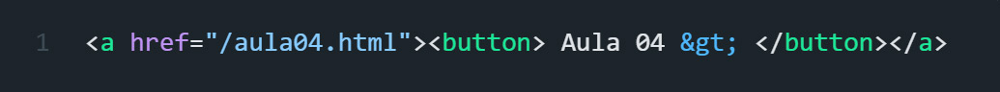

A tag HTML "a" é usada para criar um link em uma página da web.
O link pode ser usado para direcionar o usuário para outra página da web, um arquivo, um email ou um local específico na mesma página.
Em termos de tradução, "a" significa "âncora" em inglês.
Essa é uma referência ao uso original da tag "a" como um "ponto de ancoragem" para criar links dentro do mesmo documento HTML.
Para vincular o texto a uma página da Web, adicionamos href="" junto com uma URL.
href é a abreviação de "referência de hipertexto".
"href" é um atributo. Todos os atributos têm duas coisas em comum: fornecem informações extras e ficam dentro da tag de abertura.
Os atributos são adicionados após o nome da tag e antes do > sinal de fechamento.
